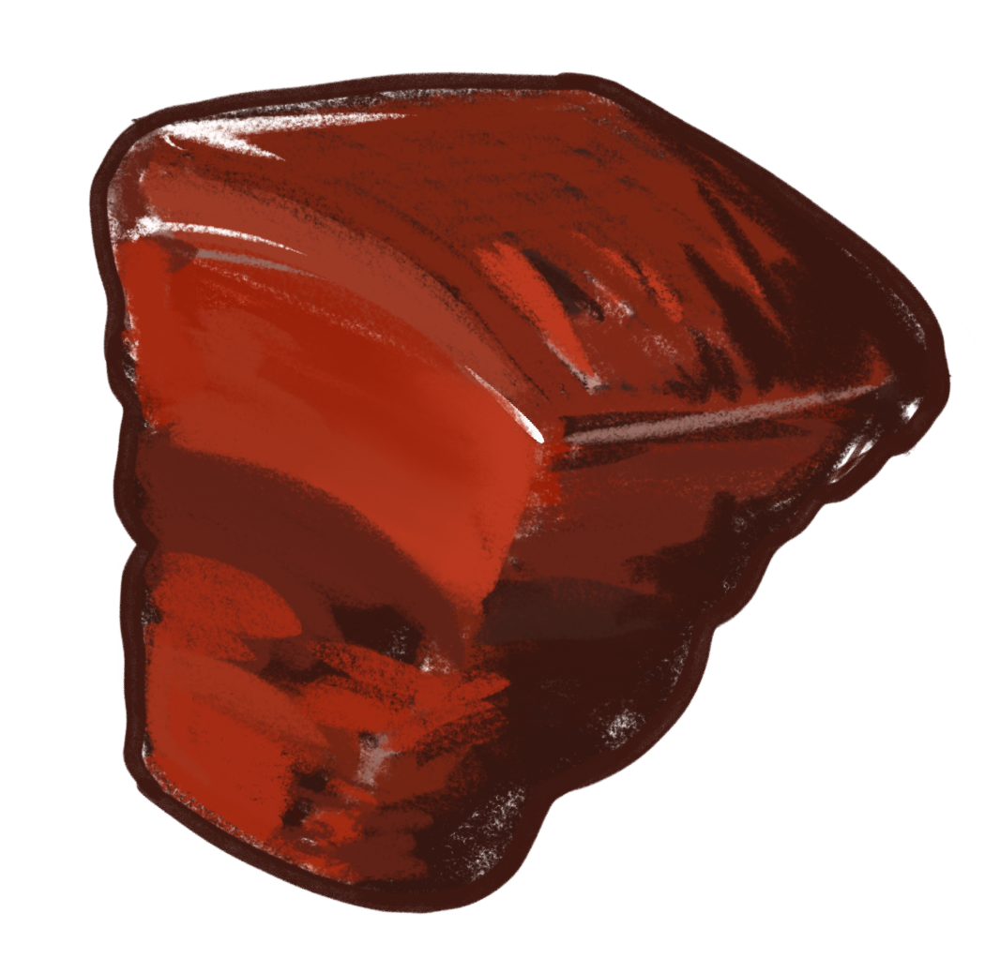

Recreate the hongshaorou you've eaten before
Where did you grow up?
Northern China
Southern China
Central
Overseas / diaspora
I’m not sure
Where is the person who cooked this dish for you from?
Northern China
Southern China
Central
Overseas / diaspora
I'm not sure
How often did you eat hongshaorou growing up?
Very often
Occasionally
Only during festivals
Rarely
I mostly know it from restaurants
What do you remember most about the flavor?
Sweet
Soy-sauce rich
Very soft and fatty
Dark caramel color
I mostly remember the smell
What does this dish mean to you?
Home
Childhood
Comfort food
Just another dish
I'm trying to remember
next
Individual memory deviation detected.
|
Recalculate recipe
Keep my memory